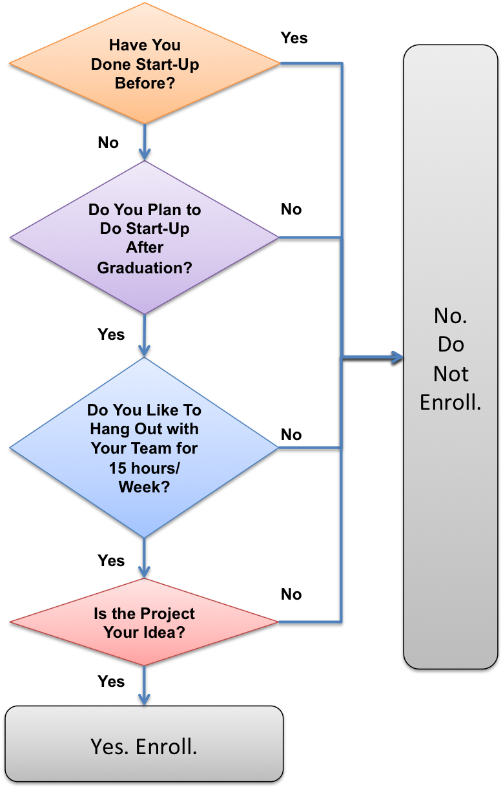

COASSF#45 - Should You Do Stanford's Famous Startup Courses?
As my prior article "15 Things to Know in Strategizing Your Stanford Courses" mentioned, doing one of those startup-themed courses (E245, S321) feels almost like a rite of passage for many Stanford MBA/Sloans. So, should you just go and do it?
It depends. Here's the decision tree I'd recommend. If you need more insight, contact me in private. I don't pass isolated judgement on any GSB course in public.
